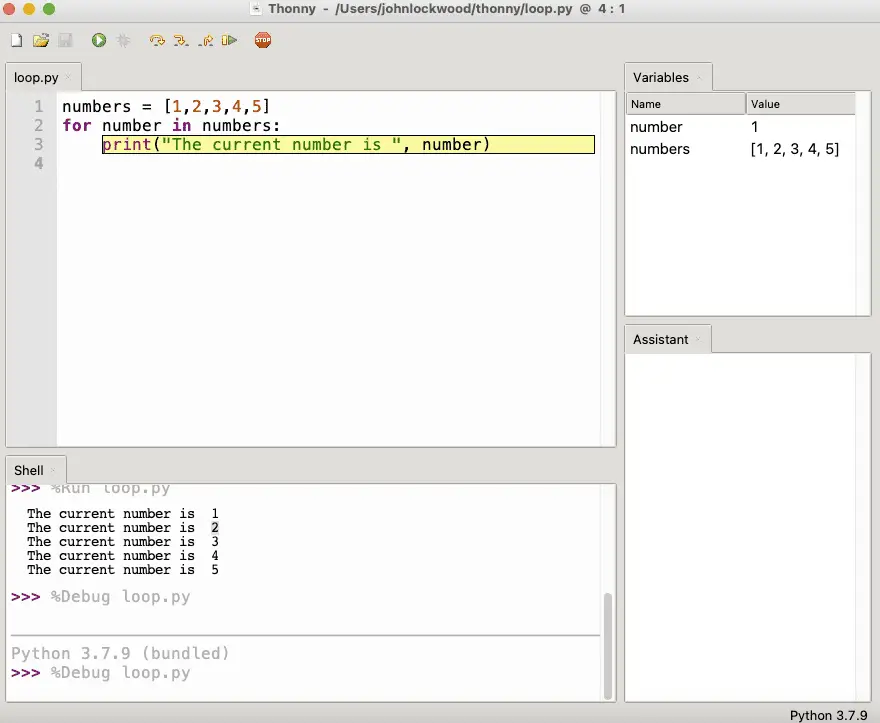

Thonny: The Most Beginner Friendly Python IDE
As a Python developer and blogger, I have worked with and reviewed many different Python development tools. I tend to pick my favorite tool based on the task at hand: PyCharm for professional work that may involve other languages, Jupyter Lab for exercise for this blog, and VS Code for quick scripts and terminal work.
Every time I use one of these tools, I think about things that might slow down or hang up a beginner. I also think back to one of the first programming books I ever owned, which came complete with an in-memory C compiler that did almost everything but would not build executable files. Was it everything I’d eventually need as a beginner? Not really. But it did have some critical features:
It was easy to install and run without getting stuck.
There was no configuration involved; it just worked.
When I work with the Thonny IDE for Python, Thonny reminds me of the simplicity of that first C compiler, which came not on twenty-two 3.5” floppies like the one I purchased a couple of years later (sheesh!). It just came on one floppy that came with the book.
In general, Thonny is the best Python IDE for beginners. This is because it has a simple, one step installation that provides both the Python interpreter and runtime and an IDE configured to use it. In addition, the Thonny debugger goes beyond the step-into function of most debuggers to show beginners in detail how each expression in Python is interpreted.
Installing Thonny Could Not Be Simpler
The beauty of the Thonny installer is that they’ve combined the Integrated Development Environment (or IDE) and the Python program and runtime libraries on which it depends into a single installer. Because of this, all you have to do is install it and go!
The simplicity of Thonny is much better than the alternative: you install a Python release, then install an IDE, and configure the IDE to work with the release. Depending on the IDE you choose, this can either be somewhat straightforward or a mini-project in itself.
Let’s walk through how simple it is to install Thonny, first on the Mac and then on Windows.
Installing Thonny on the Mac
The simplicity of Thonny starts with their website, thonny.org, which always points to the latest stable release:
If we click on the Mac version, this will (currently) download the thonny-3.3.13.pkg file. The Thonny installer comes up, and we’ll continue through the various screens. Here’s the first:

Clicking “Continue” will bring you to the license page, and you’ll be asked to agree to the license terms. I leave the installation location as the default (install for all users). If you don’t have administrator rights, you should change this to install for the current user only.
If you do use the default here, you’ll be prompted for your Mac administrator password when you get to the Installation screen.
A few seconds later, you should see a screen telling you the installation was successful. At this point, you can go into Launchpad, search for Thonny, and launch the program. After walking our Windows friends through this same exercise, we’ll pick up the discussion below.
First Steps in the Thonny IDE
As we mentioned earlier, the Thonny IDE’s installer lets you get started right away without configuring the IDE for the Python environment since it installs and configures a Python distribution for you. The Thonny window that comes by default consists of three main parts:
A code editor where you can edit and run your Python code.
A Python Shell where you can try out brief Python code snippets without adding them to the file you’re editing. This is also where you’ll see the output of programs you run in the code editor
An Assistant window. This is another beginner-friendly feature that helps you troubleshoot common mistakes you might make as a beginner.
The code editor is in the upper left window. If we type some code there, we can run it run button (green circle with a white arrow – see below). Let’s try that on the following code:
print("Hello, World!")
Pressing the run button will prompt us to save our code.
Where Thonny Saves Files By Default
By default, Thonny saves your files to your home directory. If you’re like me, your home directory gets pretty crowded, however, so I recommend creating a folder in your home directory with whatever name you’ll remember (“python,” “source,” etc.). With that directory created, save your first file there as hello.py.
Once the file is saved, Thonny will finish running your code. At this point, it will probably look like this: (minus the red arrows highlighting the buttons):

We can see in the Shell that the program printed what we told it to print. We also get confirmation that our code is on the right track by looking at the assistant, which tells us, “The code in hello.py looks good.” Nice to know. Let’s see what would happen if it didn’t look good. Try removing the last, closing parenthesis to cause an error intentionally, and rerunning the code.
Here we see that the Assistant has given us an excellent insight as to the cause of the error – the error message “Unbalanced parentheses, brackets or braces: ‘(’ at line 1 is not closed by the end of the program” is more even more helpful than the error message that appears in the Shell. Python already provides great insights into basic structural problems that your code might have, but Thonny’s Assistant takes it a step further.
You might restore the closing parenthesis now and try some different problems. Python syntax is based on indentation, so adding a space at the beginning of the line will cause an indentation error that the Assistant will help you troubleshoot.
As you become more used to troubleshooting errors in Python, you may find that the error output in the shell is more than enough to help you understand the problem. In the meantime, however, the Assistant can help you get back to a working program even more quickly.
Using The Thonny Debugger
Thonny’s debugger is another area where the creators of the tool really tried to have the beginner in mind. Debuggers are useful for tracking down logic errors, which are different from the syntax errors we talked about in our discussion of Thonny’s assistant.
If you’re new to debuggers in general, what they allow you to do is to execute your code in a kind of slow-motion, stepping through it one line at a time. (In a long program, you can set a breakpoint to stop at a specific location, then step from there.) While you’re stepping through your code, you can watch the variables in your code as they change, to give you insight as to where the problem might lie.
The reason the Thonny debugger is beginner-friendly is that the “Step Into” function (what the Thonny documentation calls a “small step”, really shows a much more detailed evaluation of the program execution than most debuggers will.
There are pros and cons to this approach. Many teachers who use Thonny report having a debugger that shows this much detail really helped many of their students to see what’s going on in a program, so that’s a good thing. For developers used to other debuggers, however, Thonny’s debugger can feel like it steps through code “too slowly”. I don’t know if beginning developers also feel this way after they’ve used the debugger for a while.
Hands-On With the Thonny Debugger
Because “Hello World” does not provide a very good example of something one might step through, let’s open a new file and paste the following code so we’ll at least have a simple loop to go through:
numbers = [1,2,3,4,5]
for number in numbers:
print("The current number is ", number)
Pasting this in the Thonny IDE, I recommend opening the variables window using the menu combination View / Variables. With this open, we can begin a debugging session using CTRL-F5 or the debug button (shown above). This will stop execution on the first line.
At this point, F7 will step slowly through the code execution, beginning with the initialization of the list literal on line 1, going through each number one at a time. As we press F7 repeatedly, we eventually make it into the loop body itself, seeing the loop variable, “number”, get set to the first number in the list:

As shown above, now we’re in the first iteration of the loop. The list is already fully initialized, and we are working our way through it. Pressing F7 three more times, we first highlight the print function, then each of the parameters. Continuing to press F7, we eventually see the first line printed.
Closing Thoughts
There’s a lot more to Thonny than we’ve highlighted here, including an interesting tree view that shows the structure of a program in considerable detail. We’ve focused on the features that make Thonny a great beginner IDE, but after working with it for a while, you may find you’re ready to move on to an IDE that features a debugger that’s a bit less verbose. However, for getting started without having to configure anything extra, and working through a Python text or set of online examples, Thonny is an excellent choice.
You May Also Enjoy
This article is part of the Learn Python series.